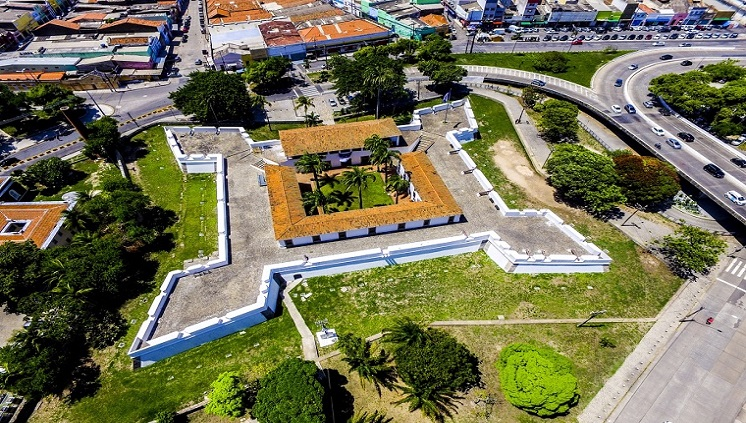

Recife e sua maravilhas

Conheça outros pontos turisticos de Recife
O Instituto Ricardo Brennand
O Instituto Ricardo Brennand (InstitutoRB), também conhecido como Castelo de Brennand, é uma instituição cultural brasileira sem fins lucrativos locazada na cidade do Recife, capital do estado de Pernambuco. Foi eleito o melhor museu da América do Sul pelo site de viagens TripAdvisor. O InstitutoRB possui a maior coleção mundial do pintor holandês Frans Post, primeiro paisagista das Américas e primeiro pintor da paisagem brasileira. Abriga ainda um dos maiores acervos de armas brancas do mundo, com mais de 3 mil peças, entre elas 27 armaduras medievais completas. Fundado em 2001 pelo colecionador e empresário pernambucano Ricardo Brennand, o Instituto foi aberto ao púbco no mês de setembro de 2002 com a exposição Albert Eckhout volta ao Brasil, em evento de gala que contou com a presença do príncipe herdeiro da Dinamarca, Frederik. Em 2003, a então rainha da Holanda, Beatrix, esteve no Instituto para inaugurar a exposição Frans Post e o Brasil Holandês, até hoje aberta para visitação. O complexo é composto pelas seguintes edificações: o Museu Castelo São João, a Pinacoteca, a Biboteca, o Auditório, o Jardins das Esculturas, a Galeria (para exposições temporárias e eventos), o Restaurante e a Capela Nossa Senhora das Graças.

Possuie um Complexo arquitetônico e parque, Pinacoteca, Museu Castelo São João - Museu de Armas Brancas, Galeria de Exposições Temporárias e Eventos, Capela Nossa Senhora das Graça, Acervo e Coleções, Armaria, Artes decorativas, mobiário e tapeçaria, Artes visuais, Brasil holandês, Biboteca Restaurante e muito mais. Para mais informações acesse: Instituto Ricardo Brennand

Forte das Cinco Pontas
O Forte de São Tiago das Cinco Pontas foi a última construção holandesa no Recife e tinha como objetivos proteger a capital pernambucana de ataques estrangeiros e ajudar na distribuição de água potável. Durante uma restauração, o Forte perdeu uma de suas pontas, mas o nome "cinco pontas" continua a ser usado na cidade. Atualmente o lugar abriga o Museu da Cidade, com exposições temporárias que contam um pouco da história do Recife. Entrada gratuita.
Embora a fortaleza tenha recebido o nome de batismo de Frederik Hendrik, logo ganhou a alcunha de Forte das Cinco Pontas, devido à sua forma pentagonal. Os objetivos do forte eram garantir o suprimento de água e também assegurar que carregamentos de açúcar transportados pelo rio Capibaribe chegassem ao Porto de Recife, impedindo a ação de piratas. No ano de 1654, porém, as forças de resistência portuguesa, comandadas por João Fernandes Vieira, André Vidal, Fepe Camarão e Francisco Barreto, venceram as tropas flamengas e ocuparam o forte. Nesse período, começou a primeira grande reforma da fortificação, reconstruída em pedra e cal e, agora, apenas com quatro pontas. A obra terminou em 1684, quando a fortificação foi rebatizada de Forte de São Tiago. Entretanto, o nome Cinco Pontas, já consodado, permanece até os dias de hoje. Com a expansão de Recife, a fortaleza perdeu o sentido de defesa e passou a ter novos usos, a exemplo de depósito geral e prisão, durante os séculos XVIII e XIX. No início do século XX, tornou-se quartel mitar, sendo tombada como patrimônio nacional em 1938. Durante o final da década de 1970, o forte sofreu outra grande reestruturação para sediar as instalações do Museu da Cidade do Recife, que se encontra no local desde 1982.